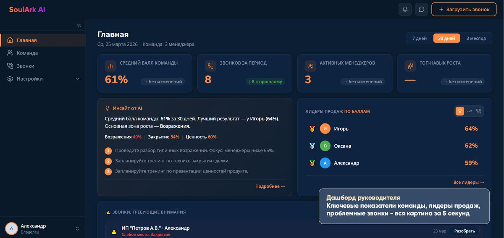
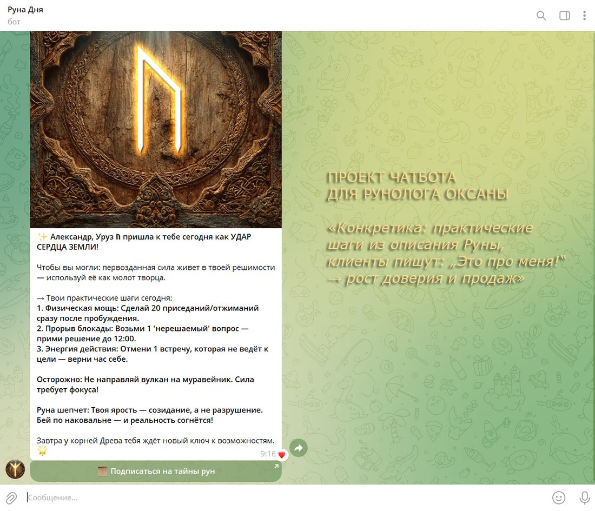
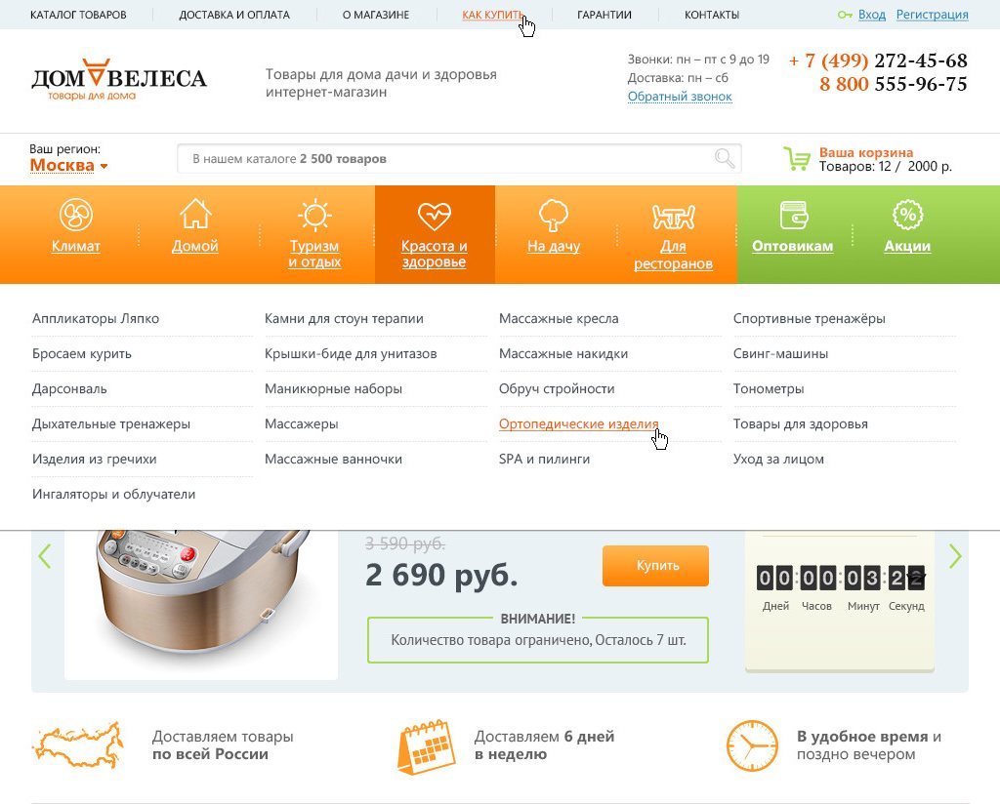

Маркетинг как драйвер коммерческого результата — на стыке стратегии, продукта и AI.
Построил e-commerce с нуля и вырастил продажи в 10 раз — до оборота 15 млн ₽ в месяц. Сейчас — на острие связки «маркетинг + AI»: сам делаю то, на что раньше нужны были дизайнер и разработчик.
Не отдельные инструменты, а система: от позиционирования до экономики воронки.
Стратегия и упаковка смыслов, а не просто «красиво». Это моя сильная сторона — выстроить то, во что верят и команда, и рынок.
Смыслы → продажиЛидогенерация, Яндекс.Директ, Google Ads, SEO — с оптимизацией под CAC, CPL и ROMI. Деньги считаю, а не осваиваю.
CAC · CPL · ROMIЦенообразование, офферы, поиск точек роста. Маркетинг как часть бизнес-модели, а не служба оформления.
Точки ростаВыстраивание процессов с нуля, управление командой и внешними подрядчиками, ответственность за бюджет и результат.
Процессы с нуляТраектория оборота в e-commerce, который я вёл как директор по маркетингу 13 лет.
Пиковый оборот 15 млн ₽/мес, управление бюджетом и командой, кратный рост в пандемию.
Выстроил позиционирование, продукт и выход на рынок. Фирменный стиль и бренд-бук сделал сам, средствами AI.
137 пользователей и −12 часов рутины в неделю — продукт, собранный целиком на AI.
Claude, Claude Code, Claude Design, YandexGPT: от продуктовых концепций и AI-скиллов до брендинга и быстрых лендингов. Создаю и собственные AI-скиллы — например, «Моё Видение», инструмент самоопределения для эксперта и предпринимателя.
Что это даёт работодателю: скорость и независимость от длинной цепочки подрядчиков — продуктовые концепции, бренд и лендинги собираю сам. Это редкий навык, за который рынок платит премию.
Несколько живых примеров: продуктовый интерфейс и клиентский AI-бот, собранные самостоятельно средствами AI.

Платформа развития навыков отдела продаж. Позиционирование, продукт и go-to-market — как сооснователь.

Бот «Руна Дня» с персональными разборами: конкретика, которая повышает доверие и продажи.

Интернет-магазин, который я вёл 13 лет как директор по маркетингу: рост продаж ×10 до 15 млн ₽/мес.
Обсудим, чем именно могу усилить ваш маркетинг — без долгих прелюдий, по делу.
Выстраиваю позиционирование, в которое верят и команда, и клиенты, и создаю среду, где людям хочется делать сильный продукт.
Не контроль и не давление, а ясная общая картина и доверие. В такой среде люди вкладываются в продукт, а не отбывают задачи.
Чувствую людей, продукт и рынок — для меня это не просто «мягкий навык», а рабочий инструмент. Им я вижу то, что не видно в отчётах.
Помогаю команде и основателю обретать ясность, видеть систему целиком и действовать увереннее.
Рядом со мной спокойно. Это то, что отмечают люди, с которыми я работал — и это часть того, как держится сильная команда под давлением.
В этом и есть моя главная компетенция: быстро разбираться и делать.
База, с которой начался путь: язык, смыслы, умение точно понимать и переводить — в том числе между бизнесом и людьми.
E-commerce с нуля до оборота 15 млн ₽/мес, рост продаж ×10, команда, бюджет и процессы. Маркетинг как драйвер выручки.
Продуктовые концепции, брендинг и лендинги средствами AI. Сооснователь SoulArk AI — позиционирование и go-to-market с нуля.
Моё кредо в работе — «сначала люди, потом инструмент». Вот как это выглядит на практике:
Практический гайд: как внедрять AI и изменения в команду без сопротивления. 7-дневный план, скрипты разговоров, 5 типичных ошибок руководителя, шаблон отчёта собственнику — на проверенных методологиях (Коттер, ADKAR).
Если откликается то, как я работаю, — давайте поговорим. Расскажу, чем могу усилить ваш маркетинг.